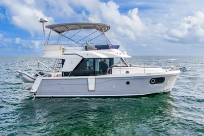

B-Atlas Boat Guide · BENE-30-SW
Beneteau Swift Trawler 30 Flybridge
2016–2020
The Beneteau Swift Trawler 30 is a compact flybridge passagemaker-style cruiser built around a semi-planing hull, single diesel shaft drive and a bright deck-saloon layout. It combines displacement-speed economy with the ability to cruise substantially faster when required.

- Length
- 32.75 ft
- Beam
- 11.58 ft
- Draft
- 3.42 ft
- Hull behaviour
- Semi-Displacement
- Fuel
- Diesel
- Propulsion
- Shaft
- Engine configuration
- Single Cummins diesel inboard
- Boat family
- Trawler
- Construction
- Fiberglass
Best for
- Couples wanting a compact long-range cruising layout
- Great Loop and inland/coastal cruising
- Buyers wanting single-diesel simplicity with flybridge visibility
Trade-offs
- Flybridge adds windage and air draft
- Fast-cruise capability comes with higher fuel burn than displacement operation
- One-cabin layout is less private for extended guest cruising
Known concerns
- No model-specific concern has been promoted to B-Atlas’s evidence threshold. This does not mean the model has no age-, condition- or hull-specific risks.
Inspection focus
- Inspect flybridge structure, helm controls and weather exposure
- Inspect single-diesel cooling, exhaust, shaft and stern gear
- Inspect saloon windows, side door and deck penetrations for leaks
- Inspect fuel, water, sanitation and electrical systems
Continue researching
Related boat models
Beneteau Swift Trawler 34 Flybridge or Sedan
36.02 ft · Semi-Displacement
Beneteau Swift Trawler 35 Flybridge
37 ft · Semi-Displacement
Beneteau Antares 9 Series 1 / Series 2
29.92 ft · Planing
Beneteau Barracuda 9 Sport-Fishing Pilothouse
29.86 ft · Planing
Beneteau Antares 11 Coupé
36.58 ft · Planing
Cape Dory 33 PowerYacht Flybridge
32.83 ft · Planing / Modified-V
About this record
B-Atlas preserves uncertainty: missing information remains unknown rather than being treated as a negative. Specifications and guidance describe the model record; individual boats can differ by year, equipment, refit and condition.